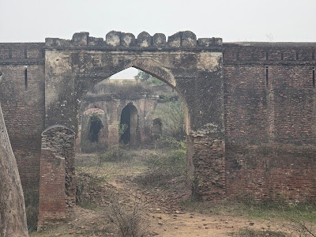

Zaffargarh Fort
ज़फ़रगढ़ क़िला


Kila Zafargarh takes its name directly from the fort built on the site, an association so complete that the surrounding settlement in Jind district's Julana tehsil is today identified almost solely by the structure rather than any older village name. According to local and regional accounts, the fort was raised in 1854 after the inhabitants of nearby Lajwana Kalan rose up against the authority of Jind state, an uprising involving Bhura and Nikaiya factions that was met with a harsh response, including executions of those involved. Maharaja Sarup Singh of Jind is credited with ordering the fort's construction in the aftermath, both to reassert control over the area and to mark the event through the fort's name, which invokes victory or triumph.
The fort belongs to the wider group of forts and fortified outposts raised by the Phulkian princely states of the Punjab plains, of which Jind, ruled by the Sidhu Jat dynasty descended from Phul, was one of three prominent branches alongside Patiala and Nabha. Unlike the larger dynastic capital forts such as Qila Jind in Sangrur or the older Jind Fort, Zafargarh functioned primarily as a garrison and border post rather than a royal residence, reflecting the practical, security-driven architecture that Phulkian rulers deployed along contested or newly annexed tracts. Its historical value lies less in scale than in what it represents: a mid-19th-century instrument of state consolidation, built specifically to project authority into a rebellious locality and to watch over Jind's frontier with neighbouring territories along the Jind-Rohtak road corridor.
Sarup Singh, who ruled Jind from 1834 to 1864, was among the more consequential Phulkian rulers, later notable for his loyalty to the British during the 1857 uprising, and the Zafargarh fort dates to the earlier, consolidating phase of his reign. It was built using lakhauri bricks, the thin, flat-fired bricks roughly 100 by 150 millimetres and only about 20 to 50 millimetres thick that were characteristic of construction across northern India through the 18th and 19th centuries, so named because they were produced and used in quantities reckoned in lakhs. The fort was raised on a mound, following the common regional practice of elevating fortifications above the surrounding plain for both defensive visibility and protection from seasonal flooding, and its layout followed the compact, enclosed plan typical of smaller Phulkian outposts rather than the multi-courtyard design of larger state forts.
Today the fort survives only in fragments, with much of its internal structure lost and, by most local descriptions, little more than sections of its outer boundary wall still standing amid the mound on which it was built. The site lies just south of Julana, close to the junction of National Highway 352 and the Trans-Haryana Expressway (NH-152D), a location that historically placed it squarely on the route linking Jind and Rohtak and explains its original role in monitoring movement along that corridor. Its condition mirrors that of several other minor Phulkian-era forts scattered across present-day Haryana, many of which lost their military relevance after the princely states were absorbed into British India and subsequently independent India, leaving their brickwork exposed to weathering and, in places, informal reuse by nearby residents.
In 2025, the Haryana government included Zafargarh Fort in a state-wide heritage restoration programme covering twenty protected monuments across eight districts, with a total outlay of about ninety-five crore rupees; roughly five and a half crore rupees of that allocation was earmarked specifically for conservation work at the Jind fort. The project, announced by the state's tourism and cultural affairs department, groups Zafargarh alongside the nearby Safidon fort and other Jind-district sites under a single conservation push aimed at halting further decay and making the sites more accessible to visitors. With that funding now directed toward stabilising its remaining walls, the fort's future condition will depend on how thoroughly the state archaeology authorities carry the work through, rather than on the informal preservation it has relied on until now.
| Date of Introduction | July 26, 2024 |
|---|---|
| Address | Branch Postmaster, |
| Kila Zaffargarh BO, | |
| Jind (dt.), Haryana - 126101. |